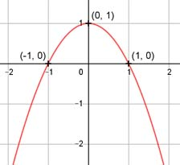

Aufgabe 14 f(x) = 1 - x2 f'(x) = -2x, f''(x) = -2, f'''(x) = 0 Definitionsbereich: -∞ < x < ∞ Wertebereich: -∞ < f(x) ≤ 1 Asymptoten: - - Symmetrie: f(x) = 1 - (-x)2 = 1 - x2 = f(x) --> achsensymetrisch zur y-Achse Nullstellen: 1 - x2 = 0 |+ x2 x2 = 1 |ⱱ x1,2 = ± 1 N1(1|0), N2(-1|0) Schnittpunkt mit der y-Achse: f(0) = 1 - 02 = 1 Sy(0|1) Extrempunkte: -2x = 0 |:(-2) x = 0, f(0) = 1 f''(x) = - 2 < 0 --> Hochpunkt (0|1) Der Hochpunkt entspricht dem Scheitelpunkt. Wendepunkte: -2 = 0 --> Widerspruch, keine Wendepunkte Graph:
